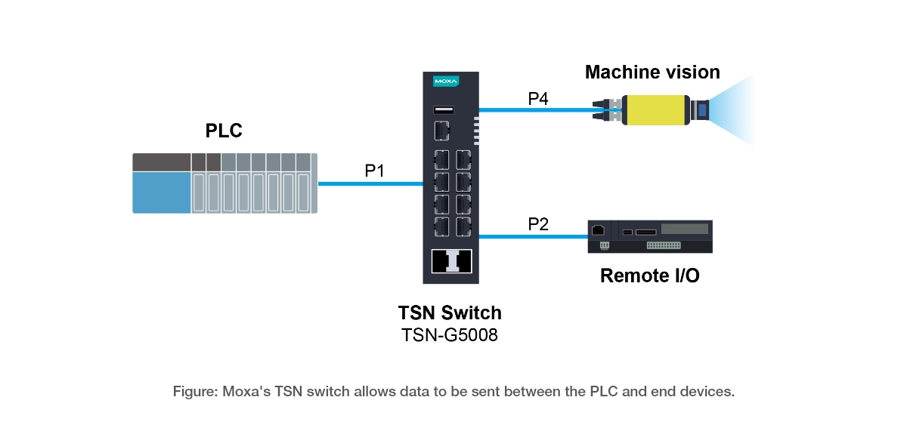

In recent years, time-sensitive networking (TSN) has leapt from the pages of academic journals to practical applications in the real world. Companies that want to reap the benefits of this exciting technology must understand the needs of industry players and start to build TSN-enabled systems. Even before the formation of the IEEE TSN task group, Moxa has been working with industry partners to promote digitalization in the manufacturing sector, also known as Industry 4.0, and all the key technologies for industrial automation. Time-sensitive networking (TSN) is a crucial enabler of industrial digitization applications where Moxa has already made valuable contributions. In fact, Moxa has partnered with numerous industry stakeholders to build TSN-enabled systems and bring the proven benefits of TSN to the factory floor through several technological advances and real-world applications.
Traditionally, different equipment, interfaces, and protocols presented serious challenges to transmitting, receiving, and processing large amounts of data in a timely manner for industrial automation applications. TSN overcomes these challenges by enabling time synchronization on the network so that all connected devices share a common time reference for all data to become available at a given point in time for specific tasks. These TSN-enabled systems are highly reliable as its built-in bounded low latency in a deterministic networking environment optimizes performance and security.
01
Technical Achievements
From a technological standpoint, Moxa partnered with NXP to prove the high reliability of the key TSN redundancy protocol, 802.1 CB. In addition, Moxa’s cooperation with Intel and Keysight has also demonstrated the feasibility of wireless TSN networks in the future.
Proven Network Redundancy
To achieve a high level of reliability, IEEE 802.1CB Frame Replication and Elimination for Reliability (FRER) works to send duplicate copies of each frame over multiple disjoint paths, so even in the event of partial network failure, proactive redundancy still allows for seamless communication. During Taipei automation 2022, Moxa partnered with NXP Semiconductors N.V., a Dutch semiconductor designer and manufacturer and port Industrial Automation GmbH, to test the reliability of an 802.1 CB-based ring topology that used Moxa switches to connect NXP equipment. As engineers unplugged certain network cables to simulate network failure, the data packets that controlled the critical equipment still synchronized and operated normally. Moreover, this test also demonstrated that robust network redundancy helps recover multiple points of failure, not just a single point of failure.
Wireless Possibilities Unleashed
Another important step toward implementing TSN in industrial automation is to ensure the data can be transmitted in wireless applications. As a lot of industrial equipment is mobile, true IIoT will not be possible without a wider array of TSN wireless applications. In Taipei Automation 2021, Moxa, Intel Corporation, and port Industrial Automation GmbH developed a platform that demonstrates the industry’s first ready-to-use, application-to-application TSN solution for instant transmission of data. Designed to be compatible with various communication protocols, the new platform is flexible and expandable, which means it can be used to build the next generation of smart manufacturing and logistics solutions, particularly when mobile devices are not only desired but required in real-world use cases. Wireless TSN fleshes out the full potential of TSN as a truly unified and high-performance network infrastructure allows all types of traffic to coexist.
02
Taking the Technology Further
In addition to proving that the technology works, Moxa has also implemented TSN in several real-world applications to help companies achieve tangible business benefits.
Reduce the Total Cost of Ownership in Wafer Manufacturing
Cooperating with ELS System Technology, (a leading Taiwanese lithography solution provider), Moxa successfully integrated TSN into the wafer manufacturing process. The system includes incorporating machine vision into the wafer misalignment correction system. The TSN technology successfully integrated a high-bandwidth video application with a high-reliability on-demand motion control CC-Link IE TSN. The solution delivered a stable motion control system, fully equipped with machine vision, for the misalignment correction system.
Moxa’s TSN solution also supports different types of traffic that may have very different requirements and offers accurate motion control data about network traffic in real time using the same open and standard network. What’s more, the TSN solution also helps increase the economic feasibility of the network and reduces the total cost of ownership (TCO) as the infrastructure is easy to maintain and scale up.
Minimize the Inconvenience of Downtime With Video Component Logging
Real-time video monitoring is notoriously data- and bandwidth-hungry. TSN’s ultra-reliability and bounded low latency make building a converged application for recording and streaming live video over a network a feasible task. To help the Japanese industrial conglomerate Mitsubishi Electric improve the logging of all system components during visual inspections, Moxa built a module with the capability to record the video stream, waveform, and related information to help users speed up troubleshooting when necessary. As they are no longer required to scour through different devices or networks, engineers can now conduct their forensic investigation on a TSN-based integrated system in which critical and synchronized visual data is safely accessed, stored, and protected.
03
How TSN Helps
TSN is the key to smart factory automation because deterministic, real-time communication allows different equipment to work seamlessly together. As networks grow in size and complexity, TSN implements traffic management and prioritizes system resources to ensure that critical data gets delivered on time, which makes the network ultra-reliable and more secure. We will now consider two use cases that showcase the capabilities of TSN, and how Moxa works with system integrators, machine builders, and end users to achieve better returns with TSN.
Use case 1
Use Case 1: Machinery Manufacturer
Responding to market demands for advanced, integrated, and highly automated machinery, machinery manufacturers aim to offer machinery that features built-in scalability, accelerated sensing, and complex laser and machine control applications. As such, however, different proprietary networks belonging to different components require seamless communication and integration in order to deliver optimal performance. Furthermore, the maintenance of these networks will present challenges for operators, especially when the machines are shipped abroad and training for operators is at times not followed through.
Moxa developed a unified TSN network to enable deterministic communication between cameras, sensors, and machine controls. Moxa’s TSN-G5008 Series full Gigabit managed switch connects multiple I/Os to the servo drivers and machine vision cameras. Due to the “first-in, first-served” nature of Ethernet, it was not possible to transmit critical data on the same cable. With standard Ethernet TSN infrastructure, however, traffic management now allows critical data to share networking resources and ensures data packet delivery. The switch is designed to make manufacturing networks, such as those of machinery manufacturers, compatible with TSN to reap the benefits of Industry 4.0.
Use case 2
Use Case 2: Mass Customization Production System
A shorter production cycle is beneficial to businesses because efficiency leads to lower costs and more flexibility. It also allows businesses to cater to a changing market and offer mass customized—and often higher margin—products, such as commercial-off-the-shelf (COTS) products. For manufacturers, such efficiency and flexibility can only be achieved when various systems—including production, assembly lines, and logistics—are on a unified network so changes and adjustments to the production and distribution processes can be implemented on short notice more effectively.
To make mass customization possible, manufacturers can deploy Moxa’s TSN-G5004 and TSN-G5008 Series Ethernet switches to combine existing proprietary networks into a single TSN-capable network to boost efficiency. Most importantly, manufacturers can achieve information technology (IT) and operational technology (OT) convergence, so as to reduce the number of processes required to make a product. As such, adaptive production, mass customization, and production optimization are enabled because assets are managed through a TSN-enabled network, with which deterministic communication ensures effective control over the entire manufacturing process.
A simplified network topography benefits operators because maintenance becomes easier and more cost effective. As operators now maintain a unified network instead of many networks with different protocols and requirements, training can be streamlined. Cabling, too, becomes more straightforward, contributing to lower maintenance costs.
04
Boundless Benefits
TSN brings efficiency, easier management, and cost effectiveness to the world of industrial automation. Its deterministic communication, whether wired or wireless, contributes to the ultra-reliability needed for high-stakes and demanding industrial systems. As TSN requires a standard, unified network for different devices, IT and OT convergence offers fewer nodes, streamlined cabling, and easier maintenance. These benefits are realized by a wide range of stakeholders from machine builders to system integrators to end-users.
Machine Builders
With TSN technology, machine builders can leverage a competitive network infrastructure that allows the motion bus and information being sent across the network to be converged on the same cable. This simplified architecture can also reduce the number of nodes thereby saving overall costs and maintenance effort. In addition, from the performance standpoint, the cycle time of the control loop can be shortened, which makes it possible to control more devices. Last, since TSN technology runs on a Gigabit network, the higher bandwidth is well-suited for adding more applications in the future.
System Integrators
The unified TSN network also simplifies network and automation architecture by reducing cabling and engineering efforts. TSN’s ability to converge all proprietary networking technologies into one single cable means that network planning and scale can be controlled and predicted, thereby reducing the total cost of ownership and saving maintenance efforts.
End-Users
Furthermore, TSN is compatible with existing networks so additional network gateways that connect to different proprietary systems are no longer required. In fact, TSN’s compatibility with existing standard networks enables easy data access so that the system can more easily optimize resources and effort for end-users.
Compared to other existing networking technologies, TSN is also better equipped to prioritize critical packets over non-critical but high-bandwidth consuming applications, which reduces overall system downtime.
Last but not least, leveraging standard Ethernet technologies means that the latest cybersecurity solutions developed for Ethernet are also available to TSN networks, offering greater protection and adaptability in an ever-changing threat climate.
05
Preparing for TSN Adoption
When it comes to implementing a TSN-capable application, a thorough understanding of the existing application requirements and network topology is a prerequisite to choosing the most suitable protocol and the right configurations for the switches and end devices.
Let us consider an example that requires both PLC communications and image capture. This application would require transmitting two types of data to the same host computer. Using a combined network topology, it is clear that the video stream is sent from port 4 to port 1, while the controller sends the synchronization message to the master server from port 2 to port 1.

Protecting the control packet from the high bandwidth video stream requires configuring the necessary protocols on the network, including time synchronization (802.1 AS) and time aware shaper (802.1 Qbv) on the related components and ports.
The control packet is sent at 1 second cycles, 300 µs for cycle date, and 200 µs for time sync data while the remaining 500 µs is running the non-cyclic data. The device can assign the corresponding VLAN ID to each slot to ensure that the cycle data will not be affected.
After clarifying the behavior of the application, the last step is to configure the necessary configurations on the Ethernet switch and end device.
06
Summary
For a long time, Moxa has been working to ensure that TSN technologies are achieving their true potential and helping industry leaders accelerate their digital transformation in industrial automation. Through the use cases we considered in this article, we hope you have a better understanding of how Moxa has worked with trusted partners and reputable stakeholders to offer future-proof TSN solutions to clients that are at different stages of their digital transformation. Moxa’s dedicated team is ready to work with you on applications where TSN technologies have the ability to make a huge difference. To learn more about the road to smart manufacturing and TSN, please visit our TSN microsite.
07
FAQ
Frequently Asked Questions
As industries evolve towards more connected and intelligent operations, TSN is playing an increasingly critical role. Whether you are new to TSN or looking to deepen your understanding, this section addresses common questions and provides insights into how TSN can transform your industrial networking landscape.
TSN enhances standard Ethernet by providing deterministic, low-latency, and low-jitter data transmission capabilities. While Ethernet inherently operates on a best-effort, first-come, first-served basis, TSN guarantees that data is delivered with precise timing. To make this possible, TSN leverages several IEEE 802.1 standards including 802.1Qbv Time-aware Shaper and 802.1AS time synchronization. These characteristics make TSN invaluable in domains like industrial automation, where precise timing is critical.
- Elevated Performance: TSN offers high-speed networking, transmission of large data volumes, highly accurate motion control, and low latency, all of which enhance the performance of your network.
- Exceptional Flexibility: TSN is based on standard Ethernet, meaning it supports a broad range of networking devices. Additionally, TSN provides the possibility of adding more advanced applications to your Ethernet network.
- Real-time Precision: TSN can prioritize network traffic to enable real-time communication and ensure that time-critical data is always delivered to the right place at the right time.
- Enhanced Security: TSN can help enhance network security by scheduling time-sensitive data to avoid the influx of non-authorized data.
The convergence of IT and OT systems into a TSN unified network is essential for achieving more streamlined production processes and higher operational efficiency, but integrating these wildly different, isolated systems into a single network is no easy task. However, a TSN unified network offers several unique benefits:
- Standardized Communication: Using a single industry standard for communication simplifies interactions, ensures compatibility between various systems, and opens up the possibility of adopting advanced applications, such as AI.
- Better Accessibility: A unified network using one language reduces the need to get familiar with proprietary protocols from different vendors, making it easier for staff to operate and maintain the network.
- Cost Efficiency: TSN simplifies device and protocol requirements to streamline the network infrastructure, which reduces maintenance and operational costs.
| Comparison Aspect | Traditional Fragmented Networks | TSN Unified Networks |
|---|---|---|
| Communication | Proprietary & segmented: Uses multiple vendor-specific protocols, resulting in data silos, high latency, and limited access to real-time data. | Single industry standard: Seamless data flow across the entire enterprise network over standard Ethernet to guarantee real-time data transmission for reliable AI, cloud, and advanced control system applications. |
| Maintenance | Requires specialized knowledge: Different protocols from multiple vendors require specific knowledge, increasing maintenance complexity. | Better accessibility: Uses a common language, simplifying troubleshooting and long-term maintenance. |
| Operational Costs | High structural overhead: Complex infrastructure that results in high integration and upgrade costs. | Cost efficiency: Unified architecture reduces and streamlines equipment needs, significantly lowering operational expenses. |